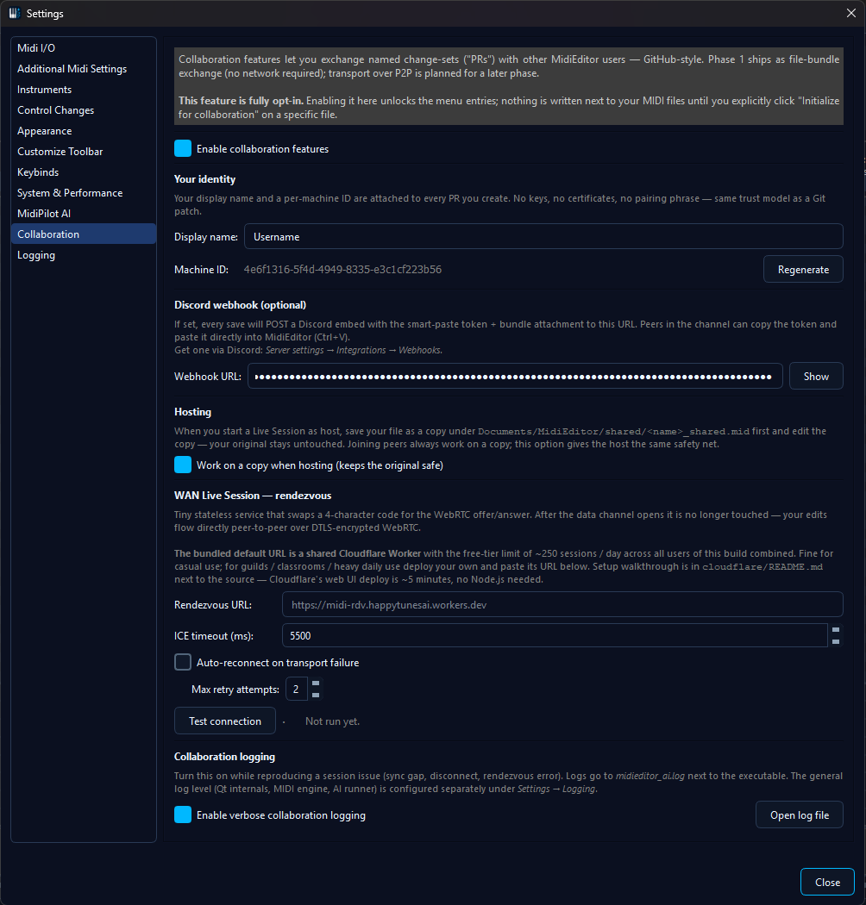

⚙️ Collaboration Settings
Reference for every toggle on the Edit → Settings → Collaboration tab. Defaults are chosen so an unconfigured editor never touches the network: enable Collab on a per-feature basis as needed.

Identity
Display name
The name shown to peers in Live sessions and in the History tab. No uniqueness check - pick whatever you want.
The machine UUID is derived once and stored next to the settings; it's not user-editable (it's there to let multiple PCs with the same display name still get distinct authorship in history).
Hosting safety
Work on a copy when hosting
When checked, starting a Live session saves <name>_shared.mid in
Documents/MidiEditor_AI/shared and switches the editor to that copy. Your original
file stays untouched on disk.
A note on non-MIDI source files: when you host on a Guitar Pro
(.gp3/.gp4/.gp5/…), MML, MusicXML, or
MuseScore file, the shared copy is written as <name>_shared.mid
- MidiEditor's editor works on a MIDI representation internally, and
saving to disk always produces MIDI bytes regardless of the source
extension. Your original on disk stays in its native format,
untouched.
WAN Rendezvous
Rendezvous URL
Where MidiEditor posts the offer SDP and polls for the answer SDP during WAN handshake.
Test connection
Two-stage diagnostic: pre-flight GET /health against
the URL, then an in-process two-transport DTLS handshake (host
candidates only, no STUN). Reports a quality grade.
/health, rendezvous round-trip, DTLS loopback,
quality grade reported. The full sequence runs in under 6 seconds
when the network is healthy.ICE gathering timeout
Max wait for STUN to finish gathering candidates before the SDP is published anyway.
Auto-reconnect on transport failure
When checked, a Live session that loses its WebRTC channel will restart the rendezvous flow with the same code, up to Max retry attempts times. Each peer's reconnect is independent - one joiner's failed retry doesn't kick the others.
Max retry attempts
How many auto-reconnect tries before MidiEditor gives up and leaves the session. Each retry waits ~2 seconds before the next attempt.
Discord webhook
Webhook URL
Discord webhook URL. When non-empty, Create PR posts an embed + smart-paste token to the channel attached to this webhook.
Even with a URL set, posting is never automatic: each Create PR dialog only sends to the channel when you click Post to Discord, so a private one-off simply isn't posted. Creating the webhook URL itself is done in Discord (Channel Settings -> Integrations -> Webhooks); MidiEditor just needs the resulting URL pasted into the field above. Each post is an embed carrying the same smart-paste token as Async PR, with the PR bundle attached.
Logging
Verbose collab logging
Promotes the midieditor.collab.* log categories to debug-level. Shows every wire
frame, ICE candidate, and snapshot diff. Big output - only enable when troubleshooting.
Open log file
Reveals the active midieditor_ai.log in your file
manager. The log lives next to the MidiEditorAI.exe.
For the general Logging settings (level, file path, rotation, per-category overrides), open the Logging tab in Settings - or read the dedicated Logging manual page which walks through each level with sample output, size estimates, and when to attach a log to an issue. The Verbose-collab-logging checkbox here is just an overlay on top of whatever level you've picked there.